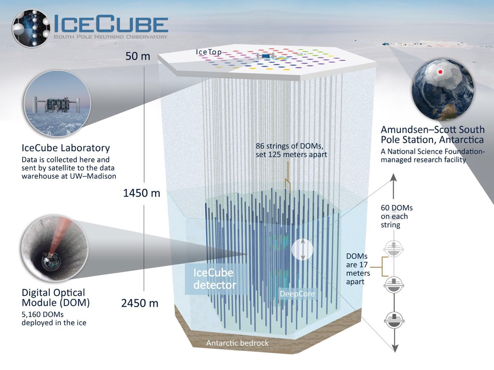

Five interactive presentation modules behind Francis Halzen and the IceCube Neutrino Observatory. Change one parameter at a time and observe how the physics responds.
Deck slides: Cosmic rays hide their origin · From cosmic rays to neutrinos (p + γ → Δ⁺ → π⁺/π⁰).
Nobel Scientific Background Figure 2: Deep Inelastic Scattering (CC vs. NC channels) · Quark fragmentation.
When the incoming PeV neutrino interacts with a quark in the proton or neutron with huge momentum transfer (\(Q^2 \gg 1\text{ GeV}^2\)), the struck quark is violently ripped out of the nucleon.
Because of color confinement (quarks cannot exist alone), the stretching gluon color flux tube snaps, creating quark-antiquark pairs (\(q\bar{q}\)) from the vacuum. This produces a collimated, relativistic spray of charged hadrons (\(\pi^{\pm}, p\)) and neutral hadrons (\(\pi^0 \to 2\gamma\)). Traveling faster than light in ice (\(c/n\)), the charged hadrons emit the intense blue Cherenkov flash recorded by the optical sensors!
Deck slides: Use the ice itself as the detector · How a neutrino makes light · Nobel Scientific Background Figure 3.

Deck slides: A cubic kilometer of ice with 5,160 sensors · What is a neutrino · Cross sections & mean free path.
Deck slides: 2013 first cosmic neutrinos · 2022 NGC 1068 (4.2σ) · 2026 Galactic plane discovery (5.7σ).
| Historical Discovery Result | Significance | One-Sided p-value | Odds of a Fluke |
|---|